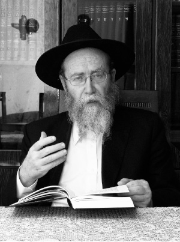

Gemara Is for Everyone
As thousands of children are returning to school and yeshiva bachurim are sitting down to their Gemaras with their compact print and small letters, what should be done with those who find it hard to learn Gemara? * How can you train a child to understand deep concepts? * How can we take the ox and the donkey and make them relevant to today ’ s kids? * This, and more, in an interview with educator, R ’ Yeshaya Weber, developer of a method to evaluate and facilitate Gemara learning for everyone .
Interview by Nosson Avrohom

R’ Yeshaya Weber identified this problem over thirty years ago. He started Machon Ruth and Yad Tzvi for remedial education for children with learning problems, and Machon Achiya to train teachers, and felt that the usual professional tools were not enough for those children who have a hard time with limudei kodesh, particularly with Gemara.
“The usual evaluation does not give a precise picture of the child’s difficulties in learning Gemara and does not pinpoint for us how to treat the problem.”
Slowly, with the guidance of professionals, R’ Weber began developing his method which is called simply HaShitta (The Method), which evaluates the child by having him learn Gemara. R’ Weber sits with the boy and as they learn, he sees what his difficulties are as well as crystallizes an approach to handling them.
“In the past fifteen years, we have treated thousands of children with this method and the results speak for themselves,” he says with enormous satisfaction. Just moments before we began the interview, parents of an older boy thanked him because his solution had given their son the desire to learn.
With his unique method, R’ Weber is creating a revolution in many religious schools in Eretz Yisroel and around the world. He has worked to train teachers so that they themselves will know how to expand on the Method. The results are seen within all sectors of the religious community and he has acquired a reputation of being successful. He publicized the principles of the Method in his book called Ohr B’Shvilei HaGemara (Light within the Pathways of the Gemara) that was published twelve years ago.
He says his sole interest is to increase the number of those who learn Torah. “The Torah belongs to every Jew. There is nobody who cannot learn it. Over the years, I have learned that all the obstacles can be turned into challenges and every child can be successful. However, it is vital that the unique problem of each child be pinpointed and treated appropriately.”
After evaluations, precise guidance is given to teachers and trainers who themselves have undergone training in the Method as well as specialized testing. They give the children tutorial lessons so that the children begin making progress.
What is the Method? Can a parent reading this article get tips to help his son? We asked R’ Weber and got practical advice. His professionalism and years of experience speak for themselves.
A BIBLICAL OBLIGATION TO GIVE A CHILD THE ABILITY TO LEARN TORAH
Before talking about how to teach Gemara, from what age should we start trying to get the child to appreciate learning and what is the best way to do this?
There must be a good bond between the child and the Torah. A child must feel that his relationship with Gemara is different; that it’s not just another subject. It’s not math or geography that you can like or dislike. The Torah is a value that exists within the soul of every Jew and pertains to all. It’s just that we need to know how to give it over to our children.
A parent who will sit at the Shabbos table and ask every time, “Nu, what did you learn this week,” will get a laconic reply and the conversation will be over. The child feels that the importance of learning is just in the knowledge. His father has to come up with different questions each week so that the interest level will be higher.
The Alter Rebbe says that a Jew must live with the times, take the weekly sidra and live with it by connecting it to what is going on that week. The same is true here. When a parent teaches a child to live this way, the Torah becomes something real, a way of life, and this must start before the child is born and then when he is very young and as he grows up.
I remember how ten years ago a couple came to me from Nachalat Har Chabad with their thirteen old son. They came to consult with me about which yeshiva to send him to. Their son was astonishingly good at Gemara for his age. I was surprised. From what I knew of them, they weren’t so involved in Gemara study. I dared to ask how their son became so outstanding in his learning. The grandmother had come along. She heard the question and said proudly, “What do you mean? From when he was born I wrapped his crib in pages of Gemara.”
Why did you need to develop a method and found an institution with an emphasis on Gemara? Doesn’t it have to do with learning in general and not the particular subject?
There is a Biblical obligation to enable every child to learn Torah and Gemara is included. There are some in the educational system who have a hard time providing a professional response to the special needs of those who have trouble learning or in realizing their potential. This is why individualized instruction is the only means to fulfilling the mitzva. For other subjects there are institutions and many ways of tailoring the material to the student.
Over the years, I have seen that many who are involved in this work are lacking professional training that would enable them to pinpoint the problems and their causes, and to match a teaching method to the learner’s needs.
Even those who underwent professional training in special education do not necessarily have the tools to practically apply what they know to teaching Gemara with its special requirements. They are unable to identify the specific difficulties and lack the strategies to address them.
We provide the background and professional knowledge needed to develop the child. We try to emphasize the unique characteristics of Gemara learning and the tools needed for learning it.
Let’s be honest. There are boys who don’t like to learn. Maybe our insistence on their learning Gemara will cause them such frustration that it will end up turning them off completely from a religious life?
I have a lot to say about that, but the basis of it is as I already said. Gemara is not just another subject for which you need to achieve a certain level of competence, and whoever does so passes the course. If that is the goal, we might as well just give up. The real idea here is that learning Gemara is the access point to the Oral Torah. Gemara contains the principles; through the Gemara you understand what Chazal are saying, you learn how to draw conclusions etc. Gemara is the Torah material that develops the student’s abilities which will help him in all subjects. When we understand this, then our role is to get the child to understand the Gemara and immerse himself in it.
There is a widespread mistake in that teachers and parents are used to one method of learning and a child who does not understand it remains behind. Then we think, maybe it’s not for him. With our Method, we employ the five types of intelligence: understanding of concepts, reasoning, reading comprehension, assimilation and expression. Hashem created us differently and each child is strong in one aspect of intelligence. We need to find out who has which one and to make the learning accessible to him and provide him with the tools to succeed.
Our job is to create a proper and suitable convergence between the student and the material by utilizing the child’s G-d given abilities. In my years of experience, I have seen students who did not like to learn; why should they when their teachers served it up to them incorrectly and they only experienced failure? After finding their strength and providing them with the tools, they were very successful.
So you’re saying that every child can learn Gemara and it makes no difference what his intellectual level is?
Yes. There is a Maharsha on the pasuk, “Torah Tziva Lanu Moshe,” where he says that it’s an inheritance; every child already has the entire Torah. The Maharsha teaches that someone who says a certain child is incapable is robbing him of his inheritance.
The question is to what extent we adults are guiding the child correctly and believing in him and his abilities. We need to be bar poel (“effective ones”). The Rebbe Rayatz says that a good teacher is not someone who is a Torah scholar but someone who is an “effective one,” he impacts his student and makes him into a “vessel.” That is what is important. We are Chassidim and we were taught to look inward. Chassidishe teachers were always more focused on developing a child’s personality and this is a foundation in Lubavitch, absolute devotion to a child. If there is devotion and love and the know-how to provide the right tools, then there is no reason why a child cannot be successful in learning.
There is a problem which I constantly bring up, which is that the number of students in today’s classrooms is not in line with what it says in the Shulchan Aruch, Yoreh Deia siman 245, s’if 9. It says that if there is a class with more than 25 students, you need to open another class. There are many classrooms with a much higher number of students. The Pis’chei T’shuva there says that the number 25 was just in the days of the Talmud. In our days, halevai we would fulfill our obligations towards ten students.
What are the main problems that hold a child back from enjoying learning Gemara?
I think that the biggest problem is us, the adults; we have a hard time with Gemara and we bequeath this to our children. If we were more professional, this subject would be the absolute favorite. In addition, there are some very real difficulties like the language of the Gemara, the style, the density and complexity of the language and concepts. In the Gemara there is a lot of fluidity; things are left open and unresolved until, sometimes, pages later.
Children by nature don’t like to get involved in intricacies, back and forth, ten possible explanations until they get to a punch line. A child by nature wants a beginning, middle and end in ten minutes. Our job is to get the child to love Gemara learning anyway. I can say with confidence: a child who really loves Gemara will find it much easier to handle difficulties in life.
In Likkutei Torah Parshas VaEschanan, the Alter Rebbe says that the back-and-forth of the Gemara is drawn down from the highest place, even if there is no practical halachic outcome, for this is the Will of Hashem. I heard from R’ Sholom Chaim Deitsch that the Rebbe said to people in yechidus that he wants the bachurim to have a koch (excitement) in the question of why Sumchus doesn’t hold like the Chachomim and vice versa. Is it hard? Yes, but our job is to simplify it and get the child to relate to the learning and to handle the difficulties by providing him with the tools he needs.
How can a teacher, who has 35 students and has to deal a lot with discipline, identify the type of intelligence within each boy and then teach the same material in so many different ways?
Nobody said the job of teachers is an easy one. As to your question, I am sure it is not beyond the realm and is doable. The teacher can start with the basics, with the p’shat of the Gemara and have most of the students with him, and then continue and explain the topic on higher and deeper levels. Every sugya has a logical and simple key idea which the teacher can start with. After all, every boy knows that one plus one equals two, and from there he can continue and learn the entire sugya.
A good teacher can, even in the middle of a lesson, figure out the boy’s type of intelligence. A teacher doesn’t sit in an ivory tower, removed from what is going on in the classroom. The learning is conducted through a dialogue with the students. It’s just that he has to first learn what the intelligences are so he can understand where each student is at. In addition, I would recommend that every teacher have a personal conversation with each student, one that he initiates and not as a reactive measure to something happened, so he can get to know them.
In a course that I participated in recently, a teacher claimed to me that he has students who are strong in all the intelligences. I told him, tomorrow, when you enter the classroom, don’t ask the strong students questions about information, but ask questions that test their understanding of concepts.
When he came back the next day to the course, he told me in astonishment that the boys he thought were weak answered nicely, and the ones he thought were strong in their knowledge had no reasoning skills.
It’s those children with problems with paying attention and concentration who have excellent reasoning skills and conceptual understanding. True, they need special treatment and a teacher who can handle them in the classroom, but I believe that they too can fit into a class. A teacher must ensure that every student has a place in the classroom and a part in the learning. A teacher needs to go home and tell himself: it was not that the student who was disruptive is no good; rather, I did not expand the circle of learners and I did not explain it enough to draw that student in.
Many parents as well as teachers promise and give prizes to motivate children. We know that the Rambam talks about giving children nuts. What do you think about this?
I am opposed to giving prizes for learning. You don’t give a prize for learning well; the learning should be a given. If a child gets used to receiving prizes every time he behaves well, there will be no end to it.
A parent came to me and said he had given his son everything, even a plane ticket. He has nothing left to excite him. He asked me what he should do. I told him that getting a child used to the system where he receives a salary for good behavior or otherwise he won’t behave is untenable.
The right way of giving prizes is by way of encouragement, but not as payment. Prizes of encouragement are minimal and then diminish over the years, while reward prizes get bigger and bigger as time goes by. Real prizes of encouragement include nice words, listening, caring, a push in the right direction and admiring words so that the child feels that the biggest prize is when he learns well. He takes pleasure in the learning. Yes, at first you give prizes, but you cannot allow the prize to be the sole motivation to learn. You can write a letter of appreciation to a child with some positive messages. In my experience, it’s worth a fortune.
PRIVATE TUTORS NEED TRAINING
It is common for parents to pay for tutors. A teacher with thirty students in a class cannot focus on the individual and parents hope that a private tutor will help their children. What do you think?
A tutor, even one who knows how to learn, needs training even more than a classroom teacher. The job of a tutor is not only academic, but in most cases is a form of treatment. The boy who comes to him is a boy with certain problems for which he needs private tutoring, so that when he no longer has a tutor he can manage on his own.
However, today, the situation is such that there are many cases in which the tutor not only does not help, but he adversely affects the boy’s progress. There are many other situations in which the tutor props the child up on crutches and when he leaves, the crutches fall along with the child. When you pick a tutor, it is not enough that he be good at learning; you have to see that he has training in the field of instruction. A tutor must learn how to properly relate to a child; otherwise, a lot of money is wasted and parents will be disillusioned.
Parents come to me, who have spent tens of thousands of shekels on tutors, and they don’t understand why there is no change. I ask them: How can there be a change? From where should the tutors, who know how to learn but not how to teach, know how to set the child straight?
How can a parent who reads this interview know how to learn Gemara with his son?
I will answer in generalities without getting into detail. A basic principle: a parent who learns with his son should always let him read. Even if you are a talmid chochom and a teacher yourself, even a rosh yeshiva, let the boy read himself and explain. During the learning, even if he makes a mistake, don’t correct him. Hear him out till the end. When he finishes, start spending time on points that he explained correctly which can be developed. You can gently ask him whether, when he said such, if he meant thus, in order to lead him to the conclusion which he should say in his own words.
Never interrupt him to correct him. I will always guide a boy and never teach him. You can ask him to read again and again and ask him whether he meant this or that. Let him lead and remember that he doesn’t like being corrected; his confidence is undermined. Even if, when I guide him, I’m already telling him 90%, let him say the final word. That gives him the confidence in learning and he’ll do it happily.
It is important for the father to be patient. If you are overwhelmed, don’t learn with your son. Better not to learn with him than to do so under pressure.
You talk a lot about the personal relationship between teacher and student, about having a personal program etc. Can you give an example of a child and the type of personal program for Gemara that would work for him?
I’ll tell you about the most recent evaluation I did, before this interview. Parents came with their son, a sixteen year old, with various problems, who received a lot of remedial help. He does not belong in a special education classroom because he is capable, but he is very weak in a regular classroom. The boy has gaps in his ability to adjust, a child with “disabilities” in professional jargon. His diagnosis was not ADD, but an emotional problem which affects his self-confidence. Ever since he was a little boy, he suffered from teasing and harassment and he absorbed it all. I saw that his problem in expending effort and proving himself is that he is afraid he will be laughed at.
I prepared a special program for his parents, to first learn with him the concepts of the Gemara, not to read a line of it; just to learn the concepts. Later on, they can learn the Gemara inside. In general, I would recommend that every teacher adapt and simplify the material of the Gemara so there won’t be a single student who does not understand it. It should even be done with those things that seem easy and simple. You can never know how a student understands it.
Let me tell you a story. A mashgiach came to me with a talmid whom he thought had psychological problems. The student said he had stomach pains but he was examined and nothing was found. That is why they concluded he was suffering from emotional problems. He asked me for my opinion and I said I am neither a doctor nor a psychologist, but I had him send me the boy.
I asked him questions in the Gemara and I saw that he knew it backward and forward, better than me. When I took a Gemara and asked him to read and explain, he was unable to. I went on to ask him questions about his daily life, such as how does water get to the faucet? What was Avrohom’s test of Lech Lecha? It was like I was speaking a foreign language. He did not know what to say.
I saw that his memory is excellent but he was extremely weak in comprehending basic concepts. In elementary school he managed to maneuver with his memory, but when he went to high school where he was asked comprehension questions, he shriveled up. When his mother asked me what I thought, it wasn’t easy for me to tell her because everyone told her he was a genius. I finally told her what I thought, “Your son’s strength is in memorizing, but not in comprehension. He repeats things like a parrot.” She thanked me and said I was first one to tell her the truth and that she had suspected the same. When his teachers were asked how he was in learning, they would say, “If only everyone understood as he does.”
The boy knew this secret about himself. Being afraid lest it become known, he developed stomach pains. If he went to a psychiatrist, he would certainly have been given pills and treatment.
He was given a program and he returned to yeshiva and changed from one extreme to the other. Of course, his stomach pains vanished. He married and just recently I met the mashgiach who spoke to me about him and he told me that this former talmid was doing wonderfully.
TRANSLATING THE GEMARA INTO RELEVANT TERMS
The Gemara speaks a lot about concepts that don’t seem to have any relevance to us. Consequently, the child is likely not to find it interesting. How should the Gemara be presented so that it is relevant to our lives?
In every sugya you can find a practical relevance. In order to understand the Gemara, it must be made relevant to the child’s reality. For example, a child learns about a lender who lends a cow and it “dies while working.” I would translate that to a drill that I borrowed from a neighbor which stopped working as I used it. Or, for example when talking about cases of negligence for which a person is obligated to pay, I will ask, “Why?” Because a person needs to take responsibility for how he impacts on his surroundings. You can’t say you just care about yourself.
The same is true for someone who left a rock and a knife on a roof and the wind blew them off and someone got hurt. I would bring 1001 examples of situations like that in our daily lives, the bottom line being that a person must take responsibility for himself and his actions. When you explain it to a child in this way, and relate the concepts in the Gemara to situations that he encounters in daily life, he connects to the Gemara and you end up training him through the Gemara learning.
DON’T BE AFRAID OF GETTING THE PROPER TREATMENT
You referred to children with attention problems; you deal a lot with children who have this issue. How do you handle them?
I will not learn with someone who is diagnosed with ADD without him being treated. It’s a waste of time. If medication is what will help him concentrate, what use will anything else be when his problem is distracting him?
However, in the same breath I want to say the following. There are many children whose behavior is like those who have ADD but their problem is actually an emotional one. You can learn with them properly, going from the easy to the more difficult, gradually, and they do well. R’ Moshe Halberstam a”h (of the Badatz Yerushalayim) told me once that there was a very mischievous child in his town whose pranks were known throughout the vicinity. I am sure that if he lived nowadays, he would be placed in special education, but when he turned eleven, he began putting all his energy into his learning. He became a leader of Klal Yisroel and his name was R’ Meir Shapiro, the rosh yeshiva of Yeshivas Chachmei Lublin. So even children like that can harness their energy towards holy things.
There was a time when I had a group of children here with ADD with whom I learned Gemara in a mathematical format that required concentration of no more than five minutes. I spoke to them in shorthand, in code, and they wrote using few words, and they absorbed an entire inyan with lightening speed and without much explanation. Those who work with these children know that they are highly intelligent, but I can definitely understand a teacher who cannot handle them in the classroom without them being treated.
Parents who did not learn in their youth, like baalei t’shuva, or fathers who never got into learning – how can such a parent review the Gemara with his son, not to mention getting his child to enjoy it?
That is often asked. Some parents have come to me and asked that, and I say that someone like that can make learning beloved to his son more than others. You ask your son to learn with you. The son feels responsible to learn with his father; whatever he learns he needs to teach to his father, who shows him that he enjoyed learning with him. This greatly motivates the child. It’s an incredible personal example that makes Torah learning beloved to a child. The father shows the child how important Torah is to him.
The story is told about a rav and a balabus. The rav’s children turned out okay, but the balabus’ children became rabbanim and maggidei shiur. The two fathers once met and the rav asked: How did this happen?
The balabus replied: When you went home, what did you talk about? How what the other rabbi said was incorrect and only you were correct. When I went home, I said, my dear children, come hear the wonderful Torah I heard today. Did you also hear something? If so, I’d like to hear it.
The father enjoyed hearing Torah from his children and they tried listening in order to please their father. The rav contradicted others, and so his children had no desire to learn because they didn’t want him to contradict them.
I’d like to mention here that people think that learning with a son is only the father’s job, but the mother also has a job. Between the courses served on Shabbos, she can listen to the Torah being said and ask questions and take an interest. She can show her son that she finds this important and fascinating. That is the biggest encouragement to a child. You don’t have to wait for the Avos U’Banim program. Learning with a child has no set time. Showing that you cherish Torah can happen at any time. A child needs to know that if he comes home and has Torah stories to relate, this brings simcha to the home.
YOU CANNOT BE MEKUSHAR WITHOUT LEARNING GEMARA!
To what extent does your being a Lubavitcher Chassid play a role in your educational projects? Do you consider it a shlichus?
If I didn’t see it as a shlichus, I would not be investing so much energy and money. When I finished learning in the yeshiva in Montreal, I could have gone on shlichus like the rest of my friends. I have a lot of friends who are shluchim, but I saw my shlichus in chinuch. I wanted to use my talents and so, with the Rebbe’s brachos, I went out to help Jewish children. I work not only within Chabad, but mainly outside of Chabad.
People from all groups know that we are Chabad and nobody is bothered by that. Some of my students opened an institute in Williamsburg. My dream is for the Method to reach all communities so that more children can benefit from it and love learning Gemara.
What do you say to parents who say that the most important thing to them is that their son be mekushar to the Rebbe? It is less important to them that he know the Gemara well.
It shows a complete lack of understanding of what hiskashrus is. How do you connect to the Rebbe? By learning his sichos and maamarim. My question is: how can a bachur understand the sichos that are full of quotes from the Gemara if he doesn’t learn Gemara? Moreover, the Rebbe asked and begged, time and again, that bachurim be immersed in and “live” with their Gemara learning. Not for naught does it say in Pirkei Avos, “V’lo Am HaAretz Chassid.”
RABBI YESHAYA WEBER
R’ Weber was interested in chinuch from a very young age.
“When I was a boy, I did some mischief and then checked to see the reaction of the teachers. One put me in my place, while another justified what I did. Afterward, I went over to the one who censured me and said, ‘You should know that your approach is correct.’ I felt that he really cared about me.”
The big influences in his life were his father, R’ Elimelech a”h, and his uncle, the mashpia R’ Moshe Weber a”h, as well as other outstanding personalities in Yerushalayim of the previous generation.
“My father always taught me to look at the neshama, to evaluate and learn from people not based on their external appearance. True greatness lies hidden from the eye, he would repeatedly say.”
When he was a young boy, his family moved to the United States because of a strong friendship that his father had with R’ Uriel Tzimmer a”h who had also emigrated.
“My father was very close with Chabad and the Rebbe, but he did not want me to learn in a Chabad yeshiva. He sent me to learn in Yeshiva Torah Vodaas, but I wanted to learn in Chabad. This was the basis for the yechidus that I had together with my father in Shevat 5726.
“The topic came up and the Rebbe said that the Rambam writes that a boy needs to learn where he wants. The Rebbe asked: Why is this Halacha written in the Laws of Honoring Parents and not in the Laws of Talmud Torah? He said that this is because this is true respect for parents. If a boy learns in a place he doesn’t like but where his parents want him to learn, then after a while he will drop out and this will cause his parents great aggravation. If he learns where he wants to learn, and he has the desire to learn and is successful, there is no greater honoring of parents than this.
“Even before that yechidus, when we arrived in New York at the beginning of Nissan 5722, my father took me to the Rebbe who was busy giving out matzos. My father introduced me to the Rebbe who said to my father: I know him because he sends me letters.
“From when I was a child in Yerushalayim, I would write to the Rebbe and share my thoughts and ask for a bracha. I was thrilled that the Rebbe identified me out of the hundreds of thousands of letters he received.”
R’ Weber said that the Rebbe was very involved in his chinuch. His father had yechidus a number of times in order to receive guidance in this area. He gave up on his desire that his son learn in a non-Chabad yeshiva and made peace with his switching to Yeshivas Tomchei T’mimim in Montreal. Later on, after he married, he founded a kollel in Montreal together with R’ Zalman Morosov. Two years later, he moved to Eretz Yisroel and was one of the founders of Nachalat Har Chabad.
“Upon R’ Nosson Wolf’s request, I learned with the new immigrants who were coming at that time from Russia. I taught them to read and write and did mivtzaim with them. That was my first chinuch attempt.”
Later on, he returned to Yerushalayim and worked as a teacher in the Chabad elementary school in Shikun Chabad, where he was very successful. Throughout these years, he received guidance and brachos from the Rebbe for his educational work.
“In 5737, I had yechidus and I asked the Rebbe for a bracha for my work. The Rebbe said: Great and outstanding success with your children, these are the students.”
Over the years, he has worked as a guidance counselor in elementary schools all across the religious spectrum.
“During the years that were the hardest in terms of the war waged against the teachings of the Baal Shem Tov, I was a guidance counselor in a Litvishe elementary school. The fact that I was a Lubavitcher did not bother anyone. People knew that what matters to me is the students’ success.”
Indeed, it is remarkable to see how he has received brachos and encouragement for his Method from all segments of religious Jewry and how his Method has attracted many teachers.
Beis Moshiach (staff). "Gemara Is for Everyone." Beis Moshiach, no. 894 (August 27, 2013).